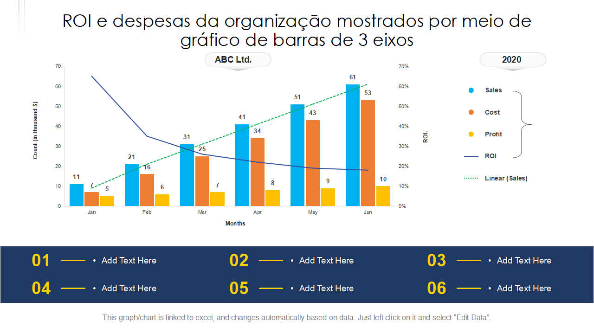

Payback Estimado < 6 Meses
A economia gerada pelo estancamento de vazamentos e redução da conta de água paga o investimento na solução em poucos meses.
Instalação Non-Invasive
Sensores clamp-on externos e conectividade sem fio permitem a instalação sem necessidade de interromper a linha de produção.
Segurança Cyber-Industrial
Comunicação MQTT criptografada (TLS/SSL) garantindo proteção total contra invasões e adulteração de telemetria.
Argumentos de Valor e Impacto Financeiro
Diferenciais quantificáveis que garantem a aprovação da diretoria e conselhos de administração.
Redução de Perdas
Corte automático do fluxo impede grandes sinistros em galpões e maquinários.
Conformidade ESG
Métricas transparentes de água para relatórios de sustentabilidade e auditorias.
Downtime Fabril
Fixação externa (Clamp-On) elimina paralisações para instalação da solução.
Tempo de Resposta
Leitura de alteração de fluxo e acionamento preventivo em tempo real.
Comparativo: Solução Tradicional vs HydroSense IIoT
Inspeções manuais de rotina falham em identificar vazamentos ocultos e microinfiltrações. Veja a evolução proporcionada pelo nosso ecossistema:
-
Tempo de Resposta: Reduzido de horas (ou dias) para apenas 2 segundos.
-
Perda de Recursos: Redução de até 95% no volume de água desperdiçado em sinistros.
-
Conformidade ESG: Adequação imediata aos requisitos ambientais de gestão sustentável de água.

Matriz Comparativa de Funcionalidades
| Métrica de Avaliação | Inspeção Tradicional Manual | Solução HydroSense IIoT |
|---|---|---|
| Tempo de Detecção de Vazamento | Horas, Dias ou até a Fatura Mensal | Tempo Real (< 2 segundos) |
| Ação Corretiva em Emergências | Deslocamento físico manual até a válvula | Fechamento Remoto Automático |
| Detecção de Microinfiltrações | Praticamente Impossível (Invisível) | Sensores Ultrassônicos de Alta Precisão |
| Custo de Instalação e Adaptação | Alto (Corte de Tubos e Parada Fabril) | Baixo (Módulos Plug & Play Clamp-On) |
| Conformidade e Relatórios ESG | Estimativas em planilhas manuais | Dashboards em Nuvem Auditáveis |
Pronto para Elevar a Eficiência Hídrica da sua Empresa?
Fale com nossa equipe técnica para um diagnóstico inicial gratuito do consumo de água do seu parque industrial.
Agendar Demonstração Técnica